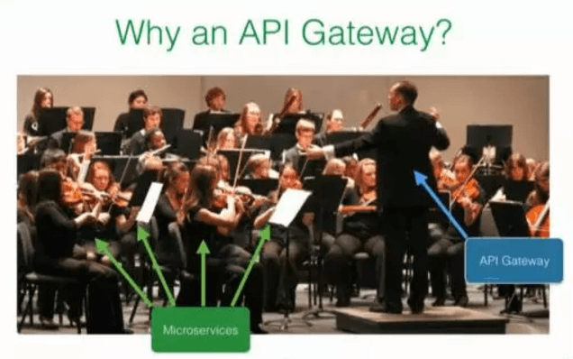

Node 与 Gateway
胡敏 @新蛋科技
About me
- Github： hstarorg
- 博客园： 幻天芒
- 邮 箱： hm910705@163.com
Agenda
- 单体架构 VS. 微服务架构
- 微服务之Gateway
- Gateway功能分析
- Node实现Gateway
单体架构 VS. 微服务架构

| 单体架构 | 微服务架构 | |
|---|---|---|
| 扩容难度大 | Vs. | 天生分布式友好 |
| 迭代周期长，更新次数少 | 快速迭代，快速发布 | |
| 复杂度呈线性增长 | 复杂度平滑，分布式系统固有的复杂性 | |
| 绑定平台、语言 | 可以异构/采用多种语言 | |
| 一个服务需要搞定所有事情 | 单一职责原则，一个服务专注一件事 | |
| 事务性好，性能较高 | 分布式事物难度大，有性能损失 | |
| 牵一发而动全身 | 容易DDD、业务边界清晰 | |
| 高内聚、高耦合 | 高内聚，低耦合 |
采用微服务后，所有的服务都变成了一个个细小的API
如何管理这些API呢？
让混乱变得有序
在微服务架构中，API Gateway是整体架构核心组件
微服务之Gateway
Gateway的优缺点
1. 封装应用内部结构，暴露统一接口
2. 减少了客户端与服务器端的通信次数
3. 简化了客户端代码
4. 非常高的可用性要求
5. 性能损失
对于大部分的微服务应用来说，
Gateway都可以算是银弹！
Gateway功能分析
反向代理
网关作为对外访问的门户，必然需要将请求转发到背后的真实API
负载均衡
每一个微服务都可以自由伸缩，此时负载均衡也就非常必要
Health Check（健康检查）
当服务具有多个实例时，网关需要知道每个实例的状态，避免将请求转发到宕机的实例上
认证 & 鉴权
Gateway作为服务调用的门户，需要保证调用方是可信任的，也需要检查调用方的权限，避免越权访问。
超时控制
通过API配置访问超时时间，超时后立即返回，避免工作线程长时间等等
请求缓存
缓存API后端服务返回的数据，降低后端服务压力
跨域支持
处理请求跨域，后台服务不需要关注跨域配置
服务熔断（断路器）
服务不可用的时候主动停止转发，以免造成更多的雪崩效应
流量管控（限流）
控制请求频率与一定时间请求次数
服务发现/服务注册
服务自动注册到gateway，减少人工配置
监控告警
微服务复杂的调用关系，监控必不可少，搭配告警，保持服务高可用
请求日志
跟踪详细的请求日志，方便查错与数据分析
分布式跟踪
跟踪具体操作的API调用链路
服务编排
将多个服务通过编排合成为一个服务，减少调用次数
协议转换
允许后台服务使用多种协议，在gateway处统一转换为HTTP
灰度发布
部分客户端应用使用新版本API，其他应用继续使用以前的API，降低产品升级所影响的用户范围
开源API Gateway解决方案
- Kong：基于Nginx+Lua进行二次开发的方案
- Netflix Zuul：Java Spring Cloud组合中推荐的网关